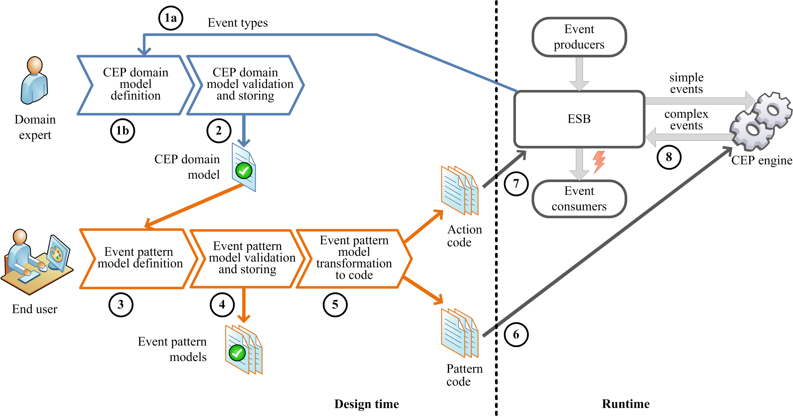

MEdit4CEP Overview
Author: Juan Boubeta-Puig (juan.boubeta@uca.es)
Last updated: May 31st, 2015.
Contents
Introduction
In this guide, we present MEdit4CEP (https://ucase.uca.es/medit4cep/), a model-driven solution for real-time decision making in SOA 2.0. The main aim of our proposal is to make domain experts' tasks of defining both event patterns to be detected and alerts for real time notification easier, hiding all implementation details from them.
More specifically, our solution is composed of a model-driven approach for CEP in SOA 2.0 together with both a graphical modeling editor for CEP domain definition and a graphical modeling editor for event pattern and action definition as well as code generation. The key feature of our event pattern editor is its ability to reconfigure itself for different CEP domains, modeled by domain experts. The fact that the editor can reconfigure the tool palette dynamically from different CEP domain models allows users to enjoy a graphical interface adapted to the specific context required. This is a novel solution for bringing CEP technology closer to any user, positively impacting on the decision making process.
Model-driven Approach for CEP in SOA 2.0
We propose a model-driven approach for CEP in SOA 2.0 whose main purpose is the definition of high-level models, which are approachable and understandable to any user. These models will be transformed into code that can be executed in CEP engines and ESBs. The figure below sketches this approach, which includes two user roles:

- Domain expert: it represents people who have a vast knowledge of a specific area. These experts are ideal candidates to accurately define the concrete domain where CEP can be applied. In other words, they can define which event types along with their properties are necessary for describing all the information about a particular domain, ensuring that the designed models are a true reflection of reality.
- End user: it encompasses all those who have the knowledge required to specify the conditions that must be met in order to detect critical or relevant situations for a specific domain, but who are not familiar with any EPL for implementing event patterns. Therefore, these end users –or simply users– will be the ones who use our graphical editors to graphically define event patterns, hiding them from the implementation information. An end user may, in turn, be a domain expert.
This approach is composed of two distinct parts. The first part covers the process that will take place at design time (left-hand side of the figure above) whereas the second part includes the process to be executed at runtime (right-hand side of the figure above). Following the illustration's numbering sequence, the steps involved from the definition of the domain where CEP will be applied until the end user becomes aware of a critical or relevant situation are described below:
- 1a) When the domain expert requests it, the system will automatically generate a graphical CEP domain model by inferring the event types along with their properties from the event producer information reaching the ESB. Then, the domain expert will be able to make changes to this generated domain model, for example, add its textual description. 1b) Alternatively, the domain expert creates a graphical domain model from scratch, defining event types along with their properties for the domain in question. To carry out this first step, the graphical modeling editor for CEP domain definition should be used.
- Once the domain model is defined, the CEP domain editor will be responsible for its validation. If it is not valid, the domain expert will be advised to correct the detected errors. This model will then be saved and can be exported and imported so as to be reused and shared with other experts.
- From the previously defined CEP domain, the end user will create pattern models. In order to do this, the graphical modeling editor for event pattern definition should be used. Note that this editor can be reconfigured with any of the existing CEP domain models.
- Once pattern models have been defined, the pattern editor will be responsible for their validation. If any of them is invalid, the user will be asked to correct the detected errors. These models will then be saved and can be also exported and imported so as to be reused and shared with other users.
- Each of these pattern models will be automatically transformed into code, which consists of both the code implementing the conditions that must be met so that the CEP engine can detect critical situations, and code of actions to be performed in the ESB when detecting such situations.
- The generated event pattern code will be added to the CEP engine at runtime.
- The generated action code will be added to the ESB at runtime.
- By means of simple events reaching the CEP engine from the ESB and event patterns added at runtime, this engine will create new complex events when detecting such patterns. Afterwards, these complex events will be sent to the ESB, which will be in charge of broadcasting them to every event consumer interested in these events –specified in the actions added to the ESB for each event pattern–, warning end users about occurred situations. This way, our approach enables real-time decision making in SOA 2.0.